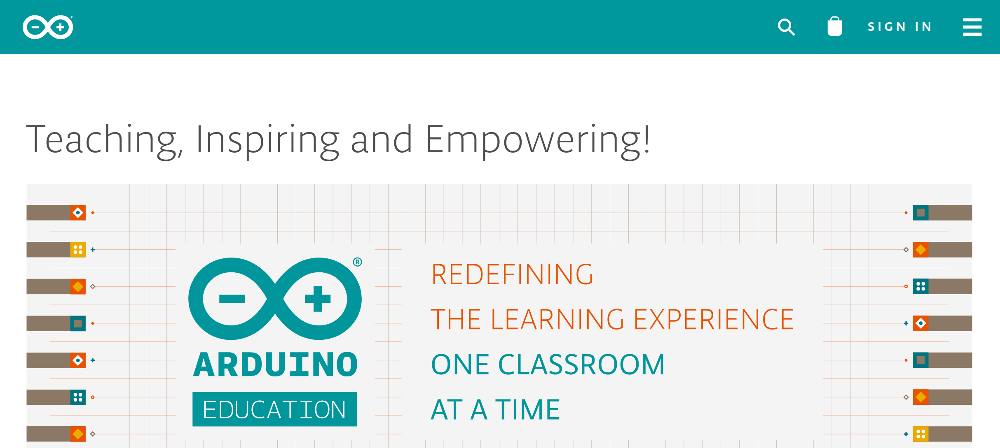
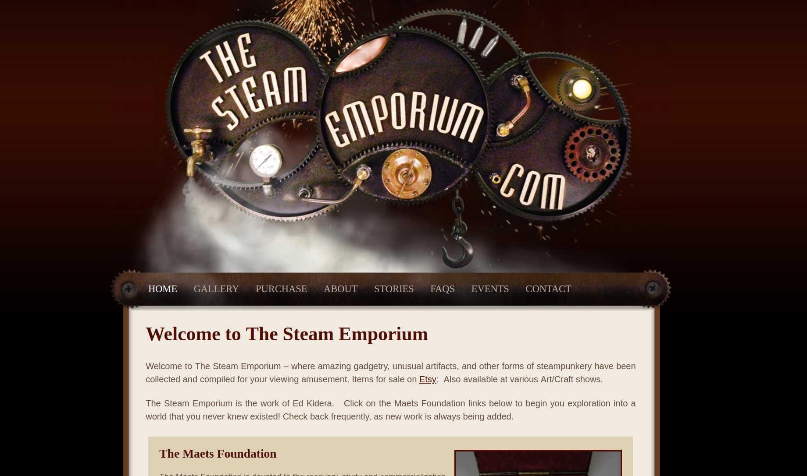
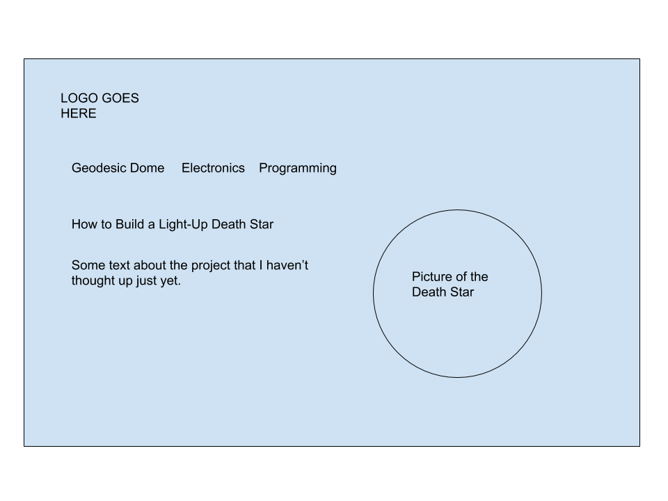

My topic will be a tutorial on building a light-up decorative Death Star. This will include a description of how to build the cardboard Death Star and the programming and electronics necessary to build a "laser array" out of LEDs.
Thematically, my site would have more in common with electronics tutorials such as those found on the Arduino website (though granted that's not a very "small" site). However most tutorials I've seen have a very similar look and feel. A rather minimalist design with bright colors. Here is a screenshot:
Stylistically, I'm shooting for something much more similar to sites such as those screenshotted here. In particular I like the style of The Steam Emporium, although the layout isn't precisely what I'm going to go for (I don't want to photoshop up such a complicated header image, for one thing). Here's a screenshot:
The vast majority of the text will be written by me. I may include occasional definitions from sites such as SparkFun, Instructables, Arduino, etc.
All project photos will be mine. For backgrounds I intend to use Site Origin's Background Image Generator. For the logo and any other stylistic elements I will look for something from Pixabay or a similar site with free stock images and then edit it in Photoshop or GIMP.
The style I plan to use is steampunk. Firstly because it looks cool and seems like it would be fun to create, and secondly because I want to distinguish it from the many electronics tutorials that have a very similar appearance with a mostly minimalist design with just a few bright colors as accents.
Here are the base colors, though I will of course also use shades and tints of these colors as appropriate.
Here's my planned layout:
